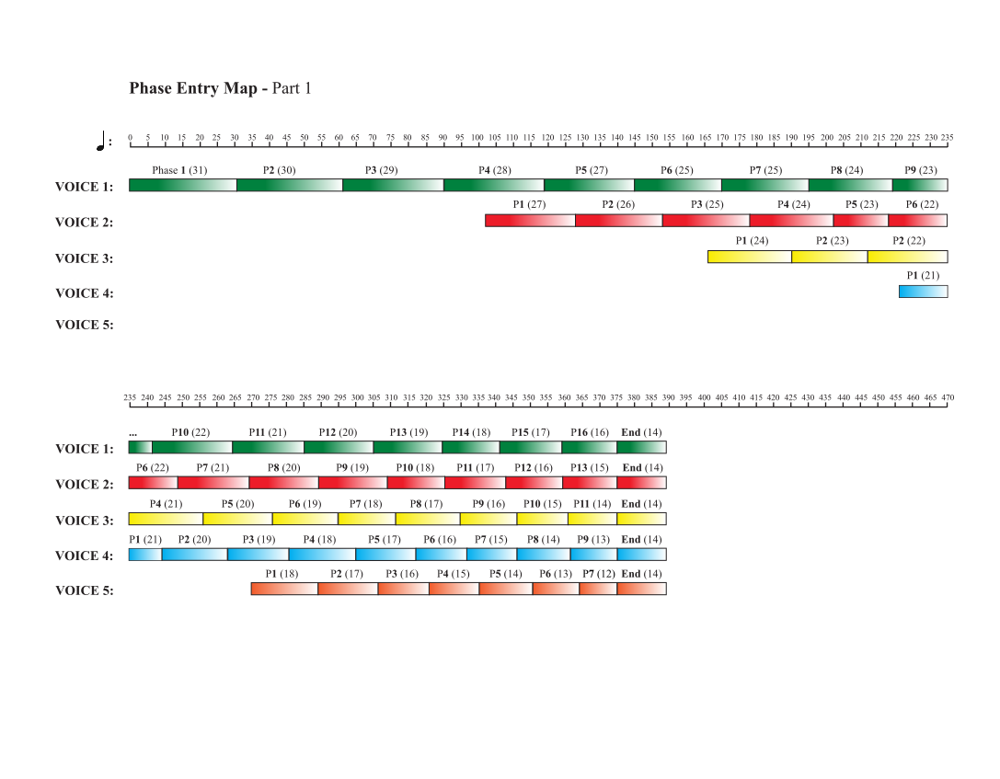
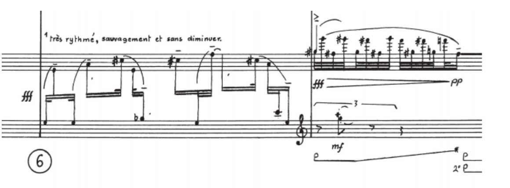
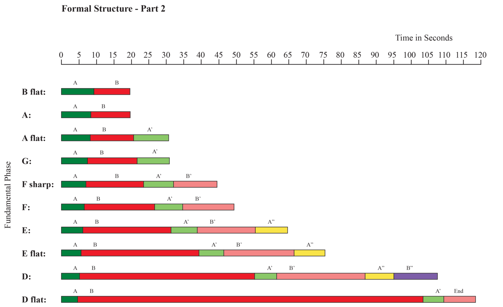
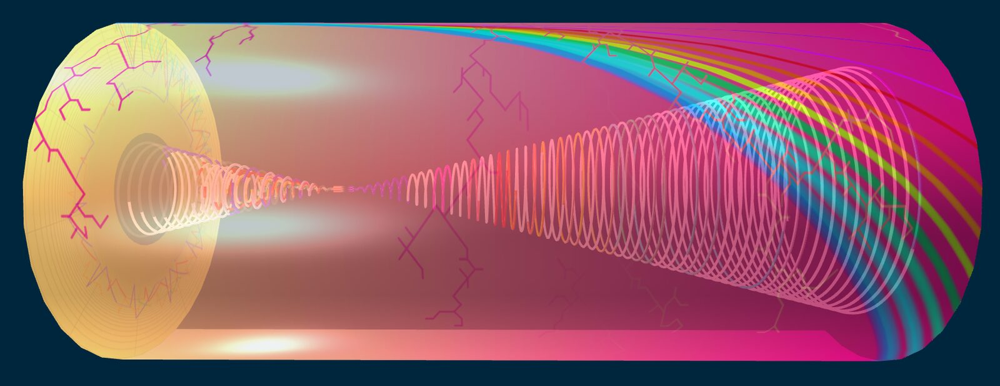
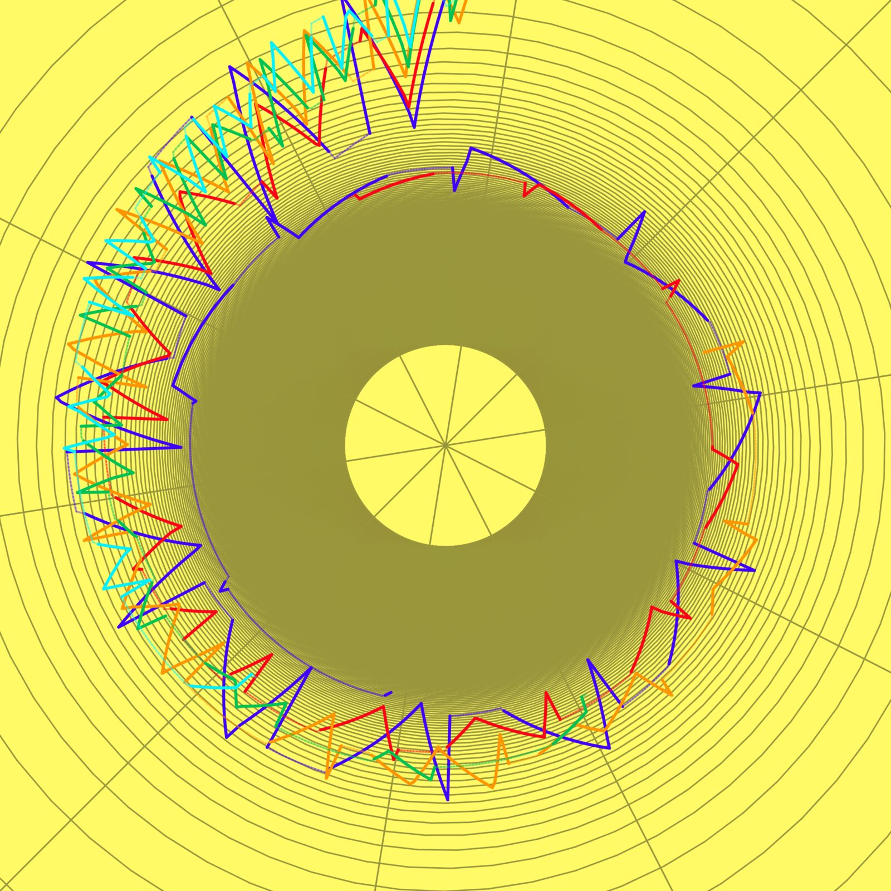
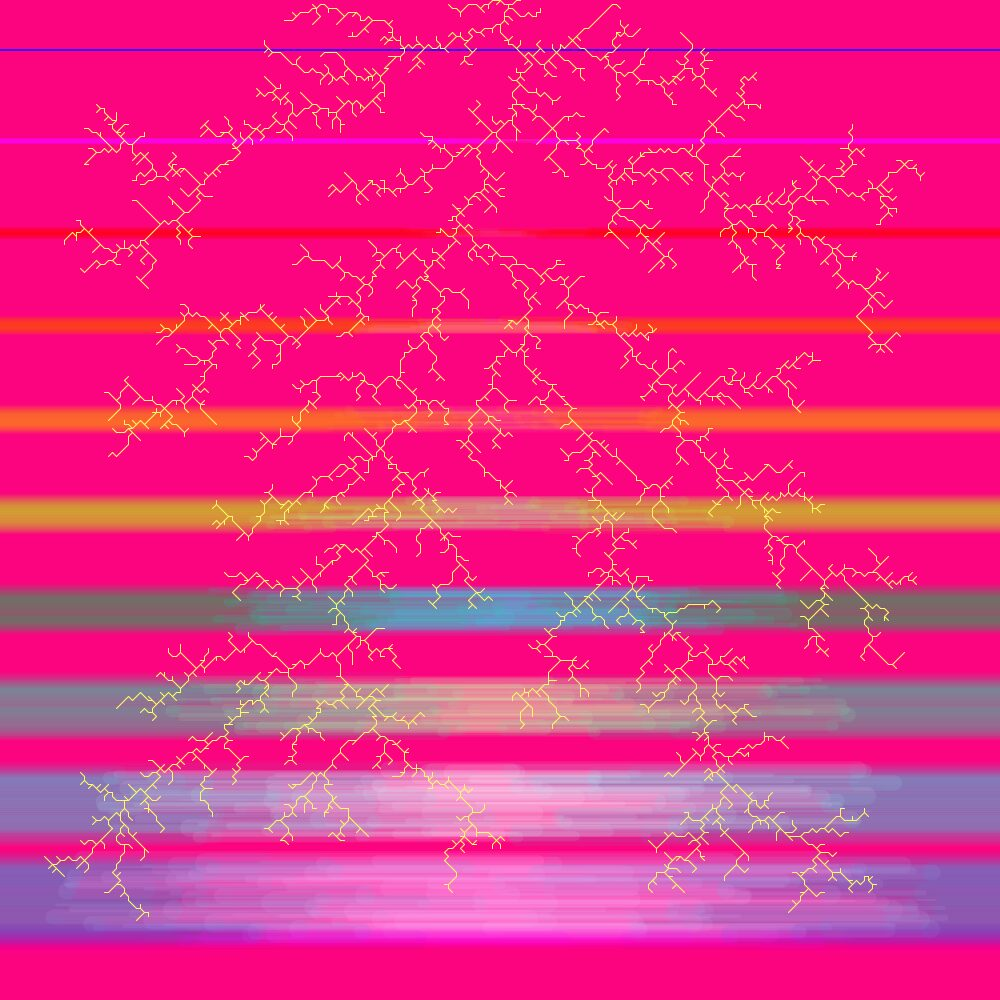
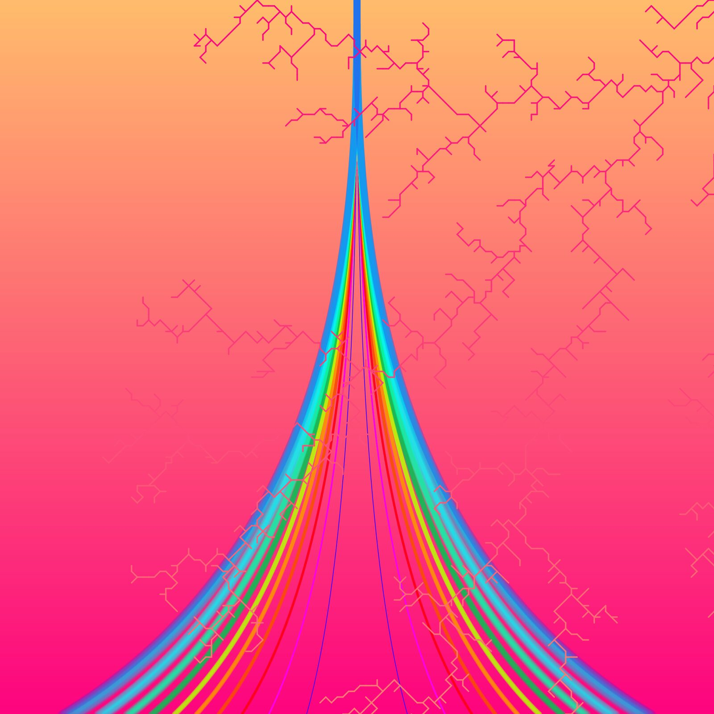
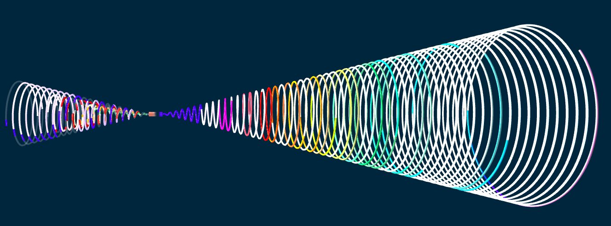
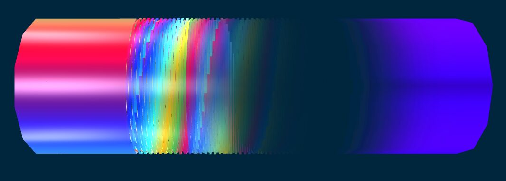

Grisey's \'Talea\': Musical Representation As An Interactive 3D Map
Abstract
The praxis of using detailed visual models to illustrate complex ideas is widely used in the sciences but less so in music theory. Taking the composer’s notes as a starting point, we have developed a complete interactive 3D model of Grisey’s Talea (1986). Our model presents a novel approach to music education and theory by making understanding of complex musical structures accessible to students and non-musicians, particularly those who struggle with traditional means of learning or whose mode of learning is predominantly visual. The model builds on the foundations of 1) the historical associations between visual and musical arts and those concerning spectralists in particular 2) evidence of recurring cross-modal associations in the general population and consistent associations for individual synesthetes. Research into educational uses of the model is a topic for future exploration.
Author Keywords
Musical mapping strategies, Music-related human-computer interaction, Interactive sound art and installations, Sonic interaction design
CCS Concepts
•Applied computing → Arts and humanities → Sound and music computing;
Introduction
Gérard Grisey, a prominent 20th century French composer, was one of the founders of spectralism. Beyond its technical aspects, which involve using Fourier analysis of harmonic spectra1 as a tool for creating timbre and harmony, the term spectralism carries philosophical implications in its emphasis on perception as central to music analysis. Like their impressionist predecessors, spectralists were inspired by visual metaphors [1] [2] [3] [4] [5].
This project contributes to current audio-visual mapping efforts by presenting a complete 3D model of Grisey’s Talea (1986). When designing this model, we began with the composer's stated intentions. The analytical framework draws on the composer’s notes in the score preface and Baillet’s analysis[6]. The visual representations draw on research examining associations between different auditory and visual parameters as well as phenomenological traditions of music analysis related to the composer’s writings on musical perception[7].
We chose to use web technology to implement the project with the goal that it would not be geographically limited but instead accessible to anybody with a computer and an Internet connection. The international collaborative nature of the project also contributed to this decision.
Project Background
Relationship to current research
To our knowledge, a comprehensive system of audio-visual mappings has yet to be developed. Many studies suffer from drawbacks such as small sample sizes, demographically skewed participation, and difficulty separating different components of sound and image in meaningful ways. Nevertheless, some associations appear consistent enough to be of significance. Giannakis makes a distinction between ‘arbitrary’ and ‘empirical’ modes of translation[8] and emphasizes the difficulty of establishing a common research methodology leading to empirically supported approaches due to the interdisciplinary nature of the field[9]. Researchers generally find it useful to distinguish between physical and perceptual frames of reference[10]. In a 2006 essay, Giannakis presents an overview of research in the field of audio-visual mappings for sound visualizations[9]. A summary of more recent research can be found in Sun, Xiuwen et al[11].
Giannakis divides research in the field into three main categories: graphic sound synthesis, color spaces for sound2 [12], and synesthesia and cross-modal associations3.
A general cross-modal association exists between aspects of sharpness (defined as fundamental frequency) and spatial height[13]. This correlation has been codified into standard notation practices, as well as musical mapping methods. Through his empirical investigations, Giannakis found general associations between the visual dimensions of brightness and saturation and the auditory dimensions of pitch and loudness, as well as associations between the visual dimensions of texture and the auditory dimensions of timbre4. Likewise, Sun, Xiuwen et al have found through their research that pitch, tempo, roughness and sharpness are associated with hue and brightness, replicating and expanding existing findings5. Sun, Xiuwen et al further conclude from their studies that certain cross-modal pairings elicit shorter response times to cognitive tasks than others6. Through their studies, Disley, Howard et al have attempted to map commonly used associations between timbral qualities of musical instruments and various descriptive terms among musicians (2006)[14].
Synesthesia is a distinct aspect of cross-modal association characterized by being consistent in the individual but inconsistent across different populations, with ‘colored hearing’ being one of the most common forms. Giannakis summarizes synesthesia research as showing associations between pitch class and color hue and between pitch height and color lightness7. Hue and pitch are determined by light- and sound frequencies respectively.
History of audio-visual synthesis
Audio-visual synthesis has a long history. Impressionism in music, which arguably constitutes a precursor to spectralism, had deep ties to the visual arts, and spectralism descends from that tradition[15]. In this way, Malherbe links Grisey and Murail to Seurat8[16].
Scriabin is considered a pioneer among serious composers, with Prometheus[17] being a prominent example. He also invented a ‘keyboard of light’[13]. In the mid-20th century, composers like Feldman, E. Brown, Cage[18], and Cardew were part of a generation championing the idea of graphic or multisensory scores[19]. Many of these composers had a strong interest in philosophy and the esoteric in common.
Clifton[20] and Ihde[21] paved the way for relating audio-visual mapping to phenomenology in their approaches to music analysis. In the 1970’s, Thompson created Soundpainting, a musical sign-language which facilitates structured group improvisations[22].
In the field of computer music, Xenakis’ UPIC (1992) allows users to draw and manipulate waveforms9. Giannakis’ Sound Mosaics (2001) is a prototype user interface for sound synthesis based on direct manipulation of visual representations, based on audio-visual mapping techniques supported by empirically demonstrated correlations10. More recently, Tymoczko has developed a model mapping musical chords onto a geometric space[23].
Wenk-Wolff[24] and McCracken[25] create video-art and paintings respectively, based on their experience of music as synesthetes.
On the educational front, the Biophilia Education Project championed by Björk integrates different academic disciplines into an innovative and creative learning environment. The project is based on apps pairing parameters of music theory with scientific phenomena[26].
About Talea
Talea or The machine and the rank weeds (1986), or Talea in short, is scored for flute11, clarinet in B-flat12, violin, cello, and piano.
In Talea, an initial idea is gradually transformed, or ‘cut’, throughout the piece13. The composer tackles two aspects of musical discourse: speed and contrast. He writes that the two linked parts of the piece (Part 1 and Part 2) represent ‘two auditory angles of a single phenomenon’, based on a ‘single gesture (fast, fortissimo, ascending - slow, pianissimo, descending)’ Further, the formal process of the second part of the form is described as creating a ‘sort of spiral’[27].
Analysis
Part 1
The piece consists of two contrasting parts, Part 1 and Part 2, linked together by a bridge. At the core of the formal structure are two elements—a and b—representing contrast on the most basic level. Element a is characterized by loud dynamics and fast rhythm, while element b is characterized by soft dynamics and slow rhythm.
Other elements are developed from elements a and b: elements a’, a’’, b’ and b’’14. Together with elements s and t, which represent silence and interrupted silence respectively, these elements combine into phases, which represent the “single gesture”.
The formal process of Part 1 resembles the workings of a machine consisting of a layering of phases assigned to five individual voices, each played mainly by one instrument15. More voices are consecutively added, resulting in increased polyphonic complexity. Element a increases in prominence relative to element b, resulting in increased dynamic activity. Each consecutive phase is shortened resulting in the compression of musical time. Contrasts are gradually blurred and leveled off due the approximation in the duration of a and b elements (and their varied forms) and the number of voices out of phase with each other.


Example 1: Relationship of the durations of phases within each voice in Part 1. Compare with example 3 and the design of the spirals.
All notes in Part 1 belong to the overtone spectrum of the fundamental c16. The pitch material is processed through two ‘imaginary bandpass filters’: The ‘range filter’ causes the pitch range to gradually expand from the middle of the overtone series towards the entire spectrum (increased broadness). The ‘microtonal filter’ is applied to the microtones in between partials, gradually eliminating them (decreased broadness).
The ‘rank weeds’ are melodic figures representing wild, spontaneous growth. Premonitions of these are increasingly present towards the end of Part 1.


Example 2: Rank weed in the piano.
Transition (bridge):
The transition executes the shift from a polyphonic to a monophonic structure, as the observer is moving from one vantage point to another. This is achieved through a process of unification of the elements of pitch and rhythm.
Part 2
In Part 2, the element structure of individual voice phases in Part 1 becomes the macroscopic formal design. This is directly related to the dissolution of polyphony, since the order of voice entries made up the macroscopic formal design in Part 117.
The formal design of Part 2 resembles that of Part 118. A new formal element is appended to every other repetition of the cycle, resulting in a gradual increase in phase length.


Example 3: Successive formal “chains” based on a row of chromatically descending fundamentals in Part 2.
Where Part 1 was based on the overtones of a single pitch class (‘c’), Part 2 contains a spectrum of the harmonics on chromatically descending fundamentals. The completion of this descent, together with the reduction of element A to a single pitch class causes Part 2 (and the piece) to end.
Two ‘imaginary tools’ have a similar function to the filters in Part 1:
The ‘microscope’ permits stretching of the tempo and penetration into the microphonics, increasing perception of detail. The ‘frequency shifter’ adds the same number (Hz) to each frequency of the spectrum over a given fundamental, distorting it.
In Part 2, the prominence of elements A and B diverges towards an extreme difference. The tempi of the A sections remain constant and those of the B sections become increasingly slower. The form thus evolves towards an expansion of musical time.
As the sections based on element B increase in length, more and more partials and non-harmonic sounds are added to their spectra, while A elements are gradually cut down from cluster chords to containing only a single pitch class. This results in increased dissonance.
In a similar manner to the way the B sections invade the domain of the A sections, the ‘rank weeds’ invade and overtake the B sections as the form progresses, dominating the soundscape completely at the end of the piece.
Interpretation / Model implementation
The model can be found online at https://derekxkwan.github.io/talea-vis/.


Example 4: The model viewed sideways. The spiral is nested inside the cylinder.
Basis in the composer’s intentions
When developing the form of the 3D model, we began with the composer's stated intention to tackle two aspects of musical discourse: speed and contrast (see above). The spiral represents the formal development that ‘drives’ the process of the piece (like an engine) and thus the ‘speed’ aspect. The cylinder represents the two parts of the piece, displayed as ‘contrast’. The form of the cylinder was a more intuitive choice than the spiral but was chosen to accommodate both the idea of a machine with an engine and to provide a form within which the spiral can be nested.
A previous draft version is described in Andersen’s 2015 TEDxSBU talk Talea—Music frozen in Space19.
Novel contribution of our model
In the context of the field of audio-visual mapping, our model presents a novel contribution through representing a complete 3D interpretation of a piece of music, mapping musical structures onto visual counterparts. Our model goes beyond a simple visual score through visualizing the musical processes the composer used as part of his formal design and through allowing the user to interactively explore significant features of the piece.
Method of interpretation
Inspired by Clifton’s phenomenology, the original illustrations were intuitive in nature. We have been drawing on Andersen’s experience as a synesthete when developing these ideas. However, our current model also incorporates more commonly found cross-modal associations for which there is partial empirical evidence. We have made direct ‘translations’ between different dimensions, most often the dimensions of (musical) time and (physical) space, in order to maintain similar architectural proportions. Some decisions have been made arbitrarily in order to accommodate other large-scale considerations.
Specifics
Aspects of contrast: the cylinder
The cylinder represents aspects of contrast through complementary or contrasting qualities for Part 1 and Part 2 respectively. The proportions of the cylinder itself are adjusted in order to accommodate the spiral and do not represent musical proportions.
Part 1: Cylinder front


Example 5: Part 1 (cylinder front) texture.
Chronological direction: clockwise. The surface can be read as a visual score, starting at the center and moving towards the periphery.
Background color: Bright yellow (parameter: emissiveness20[28]). Represents a loud, active texture and the single fundamental C and its partials, which is the harmonic foundation for Part 1. The color yellow represents the pitch class ‘c’ synesthetically to Andersen.
Five colored strands: representing the five voices of a polyphonic texture. Colors chosen in the model: Blue/purple for Voice 1 (piano), red for Voice 2 (cello), orange for Voice 3 (clarinet), green for Voice 4 (violin), light blue for Voice 5 (flute)21.
Two considerations have been applied to color selection: Timbral qualities of the instruments: intuitive perception of the strings as ‘warm’ (warm colors) and the winds and piano as ‘cold’ (cold colors) in the context of the piece. Context within whole: The five voices become the ten harmonic fundamentals of Part 2. Therefore they need to fit into the overall color spectrum of Part 2 (see below). The two background colors (yellow and magenta) have been avoided for the sake of visibility.
Imaginary tools22:
The increasing ‘bandwidth’ of the colored strands represents the ‘range filter’: development over time in the melodic ranges of each voice is represented in the movement of the lines, with pitch height ascending from the center towards the periphery.
The grid represents the ‘microtonal filter’: development from full microtonal spectrum towards a limited number of partials is represented through an increasingly wide-masked web. Associating sounding pitches with colored matter and empty pitch space with empty color space, we have imagined the respective domains of pitch range and the physical circle as surfaces which can be “filled” by material to varying degrees of density23.
View of inside/opposite side: The spiral is nested inside the cylinder. The opposite (contrasting) side of the object can be discerned in the background of the perceptual field.
Part 2: Cylinder back


Example 6: Part 2 (cylinder back) texture.
Chronological direction: top to bottom
Background color: magenta24. The color was chosen as the opposite of Part 1 (yellow in the additive color system) to maximize contrast, suggesting a more static texture and lesser amplitude (softer dynamics).
Ten colored strands: represent the chromatically descending fundamentals of a monophonic texture. The fundamentals are represented by a color spectrum from blue/purple to dark blue25. The selection was made arbitrarily in order to accommodate the overall idea of associating the color spectrum with the harmonic spectrum 26. Line thickness approximates the relative duration of each successive section, following an analogy between duration in musical time and the amount of two-dimensional space occupied on the surface.
Imaginary tools:
‘Microscope’: The gradual expansion and changes in texture of the ten horizontal stripes symbolizes ‘zooming in’ on the melodic material.
‘Frequency shifter’: Addition of horizontal lines represent an increasingly distorted harmony.
View of inside/opposite side: The spiral is nested inside the cylinder. The opposite (contrasting) side of the object can be discerned in the background of the perceptual field.
Transition: Cylinder side


Example 7: Transition (cylinder side) texture.
Chronological direction: left to right
Background color: Bright yellow gradually becomes magenta. Represents the shift from a loud and active to quiet and static texture.
The five voices of Part 1 branch out and become the ten harmonic fundamentals of Part 2. This represents a structural shift from a polyphonic/monoharmonic to a monophonic/polyharmonic texture.
Weed-like designs in the surface structure represent the ‘rank weeds’27. The development in density (increasing from beginning to end of the piece) has been portrayed in an approximate chronological manner.
Aspects of speed: the spiral


Example 8: The spiral. Chronological direction: left to right.
The spiral represents aspects of speed. Formal speed (the frequency of transitions between formal elements) is represented by the length of each formal unit. Rhythmic speed (predominance of element a/A relative to b/B) is represented by the level of saturation of the texture. The relationships in length between the different sections of the spiral are a direct translation of their durational relationship in musical time.
Colors chosen match those of the cylinder texture (see above). Dark (highly saturated) shades represent loud, active elements (elements a/A and variations). Lighter (less saturated) shades represent soft, static elements (elements b/B and variations). Transparent areas represent silence (element S), and black areas represent ‘rank weeds’28.
Part 1: Spiral
Chronological direction: clockwise. Voices and elements are represented in order of entry, measured by quarter note values.
Five colored, nested spirals represent the five voices of the polyphonic structure.
Part 2: Spiral
Chronological direction: clockwise. Voices and elements are represented in order of entry, measured by quarter note values.
Ten colored spiral sections in succession represent the ten successive harmonic fundamentals of the monophonic structure.
Transition: Spiral bridge
Chronological direction: left to right


Example 9: Spiral bridge.
Fractured elements represent the dissolution of the five voices. Semi-transparent elements represent a thinning of the texture towards a single interval (tritone). Solid elements represent the merging of individual voices and textures into a single monophonic texture.
System Overview
Kwan chose to generate the three-dimensional model using the Three.js JavaScript library29. To generate the two-dimensional textures for the models, Kwan used the JavaScript library p5.js30 and used its original Java-based counterpart Processing31 when he felt that performance gains were possible. Playback of audio corresponding to model features was made possible through Vimeo’s Player API32.
Data Processing
Several options for data transcription were considered, including spectral analysis and OCR-based score transcription. We found spectral analysis unfeasible given the polyphonic nature of available recordings. Attempts at OCR-based score transcription using Audiveris33 proved unreliable given the handwritten nature of the available score and the extensive use of non-standard notation. Therefore we ultimately decided to extract data manually based on Baillet’s analysis34. Range data was extracted directly from the score.
We transcribed Baillet’s analysis into spreadsheets and hand-converted it into CSV format to be easily parsed. As we were using JavaScript to generate the 3D models and wanted a more structured data format to work with, we used Python scripts to convert the CSV files to JSON.
Textures (cylinder)
The texture for the front (Part 1) end of the cylinder was generated in p5js. Due to the computational cost of diffusion-limited aggregation (code adapted from [29]) to emulate the ‘rank weeds’, textures for the cylinder side and the back (Part 2) end were generated in Processing.
The texture for the Part 1 end of the cylinder consists of the part’s five voices represented by overlapping Archimedean spirals[30] with polar equation r = aθ1/n ( n = 0.125, a = 910) and the same colorings as the three-dimensional spirals and an underlying gray grid against a yellow background.
‘Range filter’: Each spiral is displaced radially from its usual contour by its respective voice’s simplified pitch contour. The pitch contours of each spiral are simplified by comparing the highest and lowest pitches of each element to a central pitch (Eb4) and if a range’s overall contour is ascending or descending. If the contour of an element is descending, the radius of the spiral contracts to the displacement from Eb4 of the lowest pitch and expands to the displacement of the highest pitch if ascending. Elements with a flat contour as well as s and t elements retain the radial displacement of the simplified end of the previous element. Additionally, s and t elements are drawn with thinner stroke weight and a semi-transparent fill.
‘Microtonal filter’: The gray grid is drawn with ten lines extending outward from the center of the texture and dividing the image equally. An Archimedian spiral with n = 0.25 and a = 2730 defines the other axis of the “grid”. These parameters were chosen according to aesthetic considerations.
The texture for the back (Part 2) end of the cylinder consists of ten horizontal stripes representing the ten successive harmonic fundamentals in increasing thickness against the magenta background. Overlaid over the stripes is a root-like structure representing the ‘rank weeds’.
‘Microscope’: Symbolizing a “zooming in” on the melodic material, the ten horizontal stripes grow thicker, blurrier, and more transparent towards the bottom of the texture. To achieve this, each horizontal stripe is made up of an increasing number of one-pixel wide lines that stretch across the width of the texture and are increasingly transparent (with random offsets in opacity).
‘Frequency shifter’: To represent the simultaneous process of increasingly distorted harmony, an increasing number of horizontal lines are added over the main stripes. These pixel-width lines do not extend across the width of the texture but instead have their endpoints in increasing distances from the texture’s center. Additionally, these lines are shaded with increasingly distinct colors from the main stripe.
The texture for the side of the cylinder connects the elements of each cylinder end’s texture. Part 1’s yellow background and Part 2’s magenta background are connected in the side texture by a background gradient fading between the two colors. ‘Rank weeds’ are also present in this texture (but do not connect to Part 2’s rank weeds) follow an opposite coloring scheme to the background (a yellow to magenta gradient) and are overlaid over all other elements of the side texture. The spirals which converge at the top of Part 1’s texture split off into twenty Bézier curves that connect to the left and right ends of Part 2’s ten horizontal stripes.
Spirals
The rotating spirals that represent Parts 1 and 2 are conical spirals with the parametric equations x = t r cos (a t), y = t r sin (a t), z = t with a = 201 [31]. Part 1 consists of five nested spirals for each of the voices with r = 1.0, 0.8, 0.6, 0.4, 0.2. Part 2 consists of one spiral with r = 1.0. The length of each spiral is multiplied by a constant value (variablelenMult in the code) to adjust their lengths to aesthetic taste and visual clarity.
As Part 2 has multiple changes in tempi, sections of its spiral need to be scaled in order to reflect their proper temporal scale relations. Using Part 1’s durations in 80 bpm as a baseline, a pre-processing step on Part 2’s data is executed upon loading the 3D model that scales Part 2’s durations in relation to Part 1.
Each of the nested spirals for Part 1 represent an individual voice and spiral inward towards a central point. Each voice is represented by a color (see above). Each type of element for each voice is represented by a colored length of the voice’s spiral and its particular coloring is based on the spiral’s chosen color. a elements are of the brightest, fullest shade of the chosen color, b elements are fainter than a elements and with significantly more white, a elements have a bit more black than a’ elements, b’ elements have a bit more black than b elements and a’’ elements and b’’ elements tend even more towards black than their A’ and B’ counterparts. All a and b elements (including their derivatives a’, a’’, b’, and b’’) are of full opacity, reflectivity, and shininess. s elements are of an off-white color (regardless of spiral color) and have 20% opacity. t elements are of a dark-gray color (regardless of spiral color) and have 20% shininess, 25% reflectivity, and 65% opacity. s and t element qualities were determined by aesthetic taste. The Part 2 spiral follows a similar method to Part 1, except with the colors representing successive harmonic fundamentals following each other sequentially as part of one spiral and additional colors chosen to lie in between the original five colors.
The coloring of each element’s section of a spiral was achieved through creating a material for each individual element and assigning the material to the vertices of a spiral’s mesh. As the previous stated parametric equations calculate a spiral progressing outward with increasing values of t, calculating and assigning the vertices for Part 1’s spiral had to occur backwards as the spiral progresses inwards as it maps Part 1’s development.
In between the spirals representing Talea’s two main sections, Talea’s bridge section is represented by a twisting cylinder of colors blending and fading into transparency and transforming into blue. Except for the first stage of the bridge (where no transition occurs yet), each step of this transition is represented by a slice of the whole cylinder (in reality, each slice is its own cylinder mesh) and each slice has its own unique material. The sequence of textures for the bridge’s transforming process were generated in Processing and consist of five initially-distinct stripes for each of Part 1’s voices progressively fading more and more into each other in a gradient. In the interest of not having too many texture images, this process of distinction moving into gradation was calculated in nine steps, resulting in nine images.
At the end nearest the end of Part 1’s spiral, the cylinder is textured with the image of the five stripes at their most distinct repeated once on the cylinder. To gradually blend the colors together, successive cylinder slices are textured with images further along in the gradient sequence and the images increasingly repeat in a texture, resulting in cylinders textured with ten stripes, fifteen stripes, twenty stripes and so on. Once the bridge cylinder enters its fading-into-transparency stage, the increase in the number of repeats stops and the opacity decreases in successive slices to 0%. From this point, each successive slice is textured blue and the opacity is increased back to 100% in successive slices. To highlight the blending of colors and transition to transparent, the beginning of the bridge cylinder and the slices leading up to the transition to 0% opacity are rotated at successively increasing speeds.
Due to the less-than-straightforward mapping between a spiral’s duration scaling and the space the spiral occupies in the Z-dimension, the length of the bridge was chosen by intuition. Future improvements to the model will include a mathematical derivation of this quantity to improve scale accuracy.
Navigating the Model
Navigation through the model is made possible through Three.js’s Orbit Control library. It allows mouse and keyboard control to zoom in and out of the model, enabling the user to see both inside and outside the cylinder. It also allows the user to rotate the model and shift the viewpoint. Through event listeners and Three.js’s Raycaster, the user can mouse over structures in the model to get details about its individual elements in a text overlay. Through clicking on a text overlay’s title or pressing the space bar, the user can get further details about the model on a separate web page. Instructions on how to navigate the model are provided on the project’s landing page.
Animation
Animation is taken care of by a render() function that is called initially on startup and later by JavaScript’s requestAnimationFrame() function which is run on screen repainting. In addition to updating the scene’s camera through Orbit Controls and rendering the scene, render() calls the function animate().
The animate() function uses Three.js’s Raycaster to determine what information to populate the text overlay with. Additionally, the function is responsible for adding a defined constant rotAmt (chosen to fit aesthetic sensibilities) to Spiral 1’s Z-rotation and subtracting the same amount from Spiral 2’s Z-rotation. This causes Spiral 1 to rotate counterclockwise and Spiral 2 to rotate clockwise at the same rate. The animate() function is also responsible for the bridge cylinder’s aforementioned rotation with increasing speeds of rotation in successive slices.
Conclusions
The purpose of our model is contributing to improved access to understanding complex musical form. “Learning to play—playing to learn”35 in this context means taking an active and intuitive approach to learning through playful interaction rather than traditional analysis.
The model particularly addresses the challenges faced by students and audiences whose mode of learning is predominantly visual in today’s academic environment. The model is inspired from perceived phenomena such as synesthesia and structural proportion and therefore conceived independently from any one system of notation as a method for analysis (in particular, Western conceptions of musical notation). This independence, along with its Internet-based nature, lends itself to a wider audience beyond traditional 21st century Western art music audiences.
The current version would be suitable for a graduate-level course in 20th- and 21st century western art music. With a few alterations in the descriptions, it would be suitable for lectures for the general public and other types of learning environments as well. We believe similar concepts could also be applied in interactive environments aimed at children.
We intend to base future versions on continued evolution in current research, particularly research concerning cross-modal association as a tool for improving learning. Ultimately, we hope to present the model in a physically-interactive acoustic space36
Following publication, we hope to receive practical feedback from diverse audiences representing educational settings of all levels. This will inform future project developments.
Acknowledgments
We extend special thanks to Professor Kimura (UC Irvine) and Professor Lochhead (Stony Brook University), both of whom have made significant contributions to the evolution of this project. We also thank The Parhelion Trio, Stephen Moran, videographer Adele Dusenbury, and affiliated SBU Music Department personnel for providing and assisting with the audio attached to the model37.
Compliance with Ethical Standards
This project has received funding from the Augustinus Foundation.
Footnotes
Also known as overtone series.
↩Color spaces are models attempting to represent aspects of color in a dimensional space. Caivano and others have used these models to facilitate audio-visual mapping by assigning each color dimension to a corresponding sound dimension. These associations are typically based on physical similarities or arbitrary. See Giannakis (2001) p 15.
↩Giannakis (2001) p 8
↩Giannakis (2001) abstract
↩Sun, Xiuwen et al p 21
↩Sun, Xiuwen et al p 21
↩Giannakis (2001) p 17
↩“As with the effects of the neo-impressionists’ optical mixing, which virtually constructs a scale of colours which are not actually present on the canvas, the effects caused by spectral fusion allow coherent timbres to be heard where, on paper, only aggregates of distinct elements are notated” (Malherbe p 17)
↩Giannakis (2001) p 10
↩Giannakis (2001) p 68
↩Also flute in G, bass flute and piccolo.
↩Also clarinet in A and bass clarinet in B-flat. The clarinet part is notated in C and will be referred to as such.
↩Talea means ‘cutting’ in Latin. The term Talea “designates a reiterated rhythmic pattern to which a configuration of pitches called "color"...is grafted”
↩Since the features of these variations are only represented broadly in the model, a more complete discussion is outside of the scope of this paper.
↩Voice 1 is mainly assigned to the piano, Voice 2 to the cello, Voice 3 to the clarinet, Voice 4 to the violin and Voice 5 to the flute. In the beginning of the piece, other instruments double the first voices before separating into their own voice, creating a process of fission: All instruments double the piano (Voice 1) in the beginning of the piece, the violin doubles the cello (Voice 2) etc.
↩Untempered notes are assigned to instruments other than the piano
↩Baillet p 184
↩To avoid confusion, we call the sequences in Part 2 ‘chains’ instead of ‘phases’.
↩- ↩
Emissiveness is a different parameter than brightness (the latter relates to the color itself), but the overall perceptual effect is similar.
↩Hex codes: Blue/purple: 4000FF, red: FE0218, orange: FF9500, green: 00C354, light blue: 03F1FE
↩These elements belong to both “speed” and “contrast” but were included on the cylinder since the spiral has been reserved for other parameters.
↩This development has been portrayed as linear for the sake of simplicity.
↩A planned future improvement is making the shade more absorbent
↩Hex codes: Blue/purple: 4000FF, pink: FC03E8, red: FE0218, red/orange: FC4E03, orange: FF9500, green/yellow: BAFC03, green: 00C354, green/blue: 03FCAD, light blue: 03F1FE, dark blue: 03BAFC.
↩Both encompass a frequency range. However, there is no relationship between the relative frequency of each individual pitch and color.
↩For practical reasons, the rank weeds occurring in Part 1 have only been represented on the cylinder side and not the cylinder front.
↩A planned future improvement is adding bands to the spirals indicating phase beginnings and endings.
↩- ↩
- ↩
- ↩
- ↩
- ↩
Baillet’s analysis includes information such as: duration of phases/chains and subsections measured in quarter note units or subdivisions of the quarter note, character of the material (i.e. a/A or b/B), pitch direction, harmonic fundamentals, and tempo indications.
↩The theme of NIME 2021 (http://nime2021.org)
↩See http://www.allosphere.ucsb.edu for an example of an interactive exhibition environment
↩See model page for audio credits
↩
Citations
- ↩Anderson, J. (2001). Grisey, Gérard. Grove Music Online. Oxford University Press. https://doi.org/10.1093/gmo/9781561592630.article.45479
- ↩Hodges, B. (n.d.). Listening to Gérard Grisey’s Talea. Talea Ensemble. Retrieved from http://taleaensemble.org/listening-to-gerard-griseys-talea/
- ↩Bündler, D. (1996). Gerard Grisey. David Bündler. Retrieved from https://www.angelfire.com/music2/davidbundler/grisey.html
- ↩Gérard Grisey. (2020). Ricordi. Retrieved from https://www.ricordi.com/en-US/Composers/G/Grisey-Gerard.aspx
- ↩Arrell, C. (n.d.). The Music of Sound: An Analysis of Partiels by Gérard Grisey. In Spectral World Musics: Proceedings of the Istanbul Spectral Musics Conference (pp. 318–333).
- ↩Baillet, J. (2000). Gérard Grisey: Fondments d’une écriture. L’Harmattan.
- ↩Grisey, G. (1987). Tempus ex Machina: A composer’s reflections on musical time. Contemporary Music Review, 2(1), 239–275.
- ↩Giannakis, K. (2001). Sound mosaics: a graphical user interface for sound synthesis based on audio-visual associations. London UK. Retrieved from https://eprints.mdx.ac.uk/6634/1/K
- ↩Giannakis, K. (2006). A comparative evaluation of auditory-visual mappings for sound visualisation. Organised Sound, 11(3), 297–307. https://doi.org/10.1017/S1355771806001531
- ↩Wallmark, Z., & Kendall, R. A. (2018, June 7). Describing Sound. (E. I. Dolan & A. Rehding, Eds.), The Oxford Handbook of Timbre. Oxford University Press. https://doi.org/10.1093/oxfordhb/9780190637224.013.14
- ↩Sun, X., Li, X., Ji, L., Han, F., Wang, H., Liu, Y., … Li, Z. (2018). An extended research of crossmodal correspondence between color and sound in psychology and cognitive ergonomics. PeerJ, 6, e4443. https://doi.org/10.7717/peerj.4443
- ↩Caivano, J. L. (1994). Color and sound: physical and psychophysical relations. Color Research & Application, 19(2), 126–133.
- ↩Hein, E. (2011, October 11). Visualizing music. The Ethan Hein Blog. Retrieved from http://www.ethanhein.com/wp/2011/visualizing-music/
- ↩Disley, A. C., Howard, D. M., & Hunt, A. D. (2006). Timbral description of musical instruments. In International Conference on Music Perception and Cognition (pp. 61–68).
- Mabury, B. (2006, June 30). An investigation into the spectral music idiom and its association with visual imagery, particularly that of film and video. Mount Lawley, Western Australia. Retrieved from https://ro.ecu.edu.au/theses/129
↩ - ↩Malherbe, C., Fineberg, J., & Hayward, B. (2000). Seeing light as color; hearing sound as timbre. Contemporary Music Review, 19(3), 15–27. https://doi.org/10.1080/07494460000640341
- ↩Vanechkina, I. L., & Galeyev, B. M. (n.d.). “PROMETHEUS” (SCRIABIN+KANDINSKY): FROM THE EXPERIENCE OF MUSIC AND PAINTING SYNTHESIS. “Prometheus” Institute. Retrieved from http://prometheus.kai.ru/ck+kand_e.htm
- ↩Marshall, C. (2018, January 10). Notations: John Cage Publishes a Book of Graphic Musical Scores, Featuring Visualizations of Works by Leonard Bernstein, Igor Stravinsky, The Beatles & More (1969). Open Culture, LLC. Retrieved from https://www.openculture.com/2018/01/notations-john-cage-publishes-a-book-of-graphic-musical-scores.html
- ↩Hall, D. (2017, August 2). The art of visualising music: graphic scores. David Hall. Retrieved from http://davidhall.io/visualising-music-graphic-scores/
- ↩Clifton, T. (1983). Music as heard a study in applied phenomenology. Yale University Press.
- ↩Ihde, D. (1976). Listening and Voice: A Phenomenology of Sound. Ohio University.
- ↩History. (n.d.). Soundpainting. Retrieved from http://www.soundpainting.com/history/
- ↩Gudrais, E. (2007, January). Mapping Music. Harvard Magazine. Harvard Magazine Inc. Retrieved from https://harvardmagazine.com/2007/01/mapping-music.html
- ↩Ragin Wenk-Wolff. (n.d.). Image in my Music. Retrieved from http://raginww.com/
- ↩Zhang, J. (2017, August 14). Artist with Synesthesia Paints Music as Gorgeous Splashes of Color. My Modern Met. Retrieved from https://mymodernmet.com/melissa-mccracken-synethesia-paintings/
- ↩Biophilia Educational Project. (n.d.). Ministry for Education, Science & Culture. Retrieved from http://biophiliaeducational.org
- ↩Grisey, G. (1986). Talea: Per Flauto, Clarinetto, Violino, Violoncello e Pianoforte. Ricordi.
- ↩Dirksen, J. (n.d.). Emissive map - Learn Three.js - Third Edition [Book]. O’Reilly Media, Inc. Retrieved from https://www.oreilly.com/library/view/learn-threejs-/9781788833288/b8d2ec08-c0d6-4227-b504-0daadbc1b330.xhtml
- ↩Reas, C., McWilliams, C., & LUST. (n.d.). Simulate: DIFFUSION-LIMITED AGGREGATION. FORM+CODE In Design, Art, and Architecture. Retrieved from http://formandcode.com/code-examples/simulate-dla
- ↩Weisstein, E. W. (n.d.). Archimedean Spiral. Wolfram MathWorld. Wolfram Research, Inc. Retrieved from https://mathworld.wolfram.com/ArchimedeanSpiral.html
- ↩Weisstein, E. W. (n.d.). Conical Spiral. Wolfram MathWorld. Wolfram Research, Inc. Retrieved from https://mathworld.wolfram.com/ConicalSpiral.html